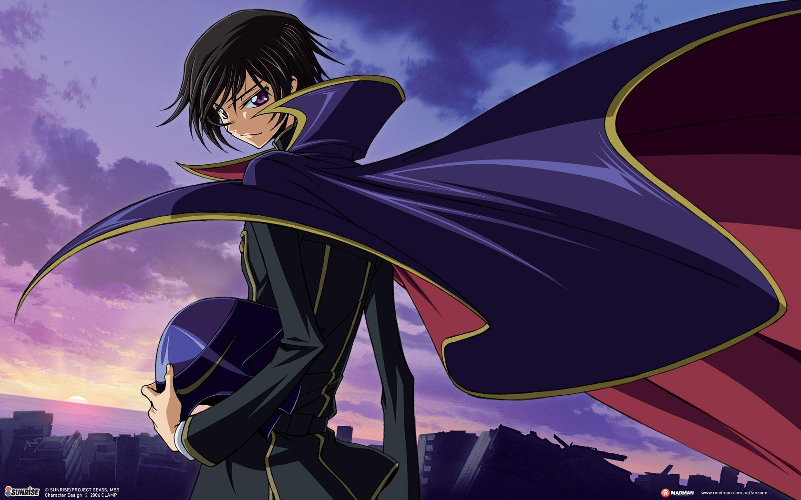

About Lelouch
Lelouch is an orphan who was abandoned by his family, the royals of Britannia. He seeks revenge against those who klled his mother and crippled his sister. He does this using the power of the Geass, an eye that compels anyone to obey his command.
Lelouch stanced up
Lelouch's Characteristics
- He's a genius
- He's protective of his friends and family
- He's a little bit crazy
Lelouch's Allies
Lelouch's list of allies is very small. His closest friend, Suzaku, his known him since childhood and acts as a counter to Lelouch. CC is an immortal being who Lelouch saved from capture. In return, she grants him the Geass and acts as his partner in crime. Kallen is one of the leaders of the Black Knights, one of Lelouch's love interests, and doesn't know that Lelouch is Zero.